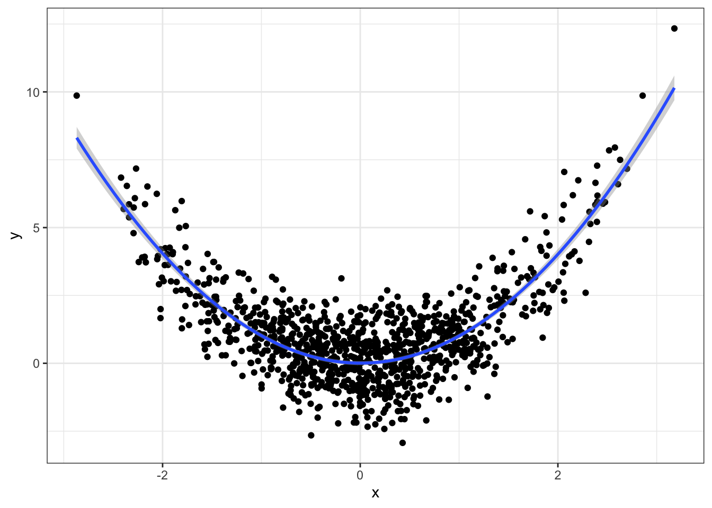

Chapter 9 Estimating assumption-free: the world of supervised learning techniques
Caution: in a highly developmental stage! See Section 1.1.
suppressPackageStartupMessages(library(tidyverse))
Wage <- ISLR::Wage
NCI60 <- ISLR::NCI60
baseball <- Lahman::Teams %>% tbl_df %>%
select(runs=R, hits=H)## Warning: `tbl_df()` was deprecated in dplyr 1.0.0.
## Please use `tibble::as_tibble()` instead.
## This warning is displayed once every 8 hours.
## Call `lifecycle::last_lifecycle_warnings()` to see where this warning was generated.cow <- suppressMessages(read_csv("data/milk_fat.csv"))
esoph <- as_tibble(esoph) %>%
mutate(agegp = as.character(agegp))
titanic <- na.omit(titanic::titanic_train)9.1 What machine learning is
What is Machine Learning (ML) (or Statistical Learning)? As the ISLR book puts it, it’s a “vast set of tools for understanding data”. Before we explain more, we need to consider the two main types of ML:
- Supervised learning. (This is the focus of BAIT 509). Consider a “black box” that accepts some input(s), and returns some type of output. Feed it a variety of input, and write down the output each time (to obtain a data set). Supervised learning attempts to learn from these data to re-construct this black box. That is, it’s a way of building a forecaster/prediction tool.
You’ve already seen examples throughout MBAN. For example, consider trying to predict someone’s wage (output) based on their age (input). Using the Wage data set from the ISLR R package, here are examples of inputs and outputs:
## age wage
## 1 18 75.04315
## 2 24 70.47602
## 3 45 130.98218
## 4 43 154.68529
## 5 50 75.04315
## 6 54 127.11574We try to model the relationship between age and wage so that we can predict the salary of a new individual, given their age.
An example supervised learning technique is linear regression, which you’ve seen before in BABS 507/508. For an age x, let’s use linear regression to make a prediction that’s quadratic in x. Here’s the fit:
The blue curve represents our attempt to “re-construct” the black box by learning from the existing data. So, for a new individual aged 70, we would predict a salary of about $100,000. A 50-year-old, about $125,000.
- Unsupervised learning. (BAIT 509 will not focus on this). Sometimes we can’t see the output of the black box. Unsupervised learning attempts to find structure in the data without any output.
For example, consider the following two gene expression measurements (actually two principal components). Are there groups that we can identify here?
You’ve seen methods for doing this in BABS 507/508, such as k-means.
9.2 Types of Supervised Learning
There are two main types of supervised learning methods – determined entirely by the type of response variable.
- Regression is supervised learning when the response is numeric.
- Classification is supervised learning when the response is categorical.
We’ll examine both equally in this course.
Note: Don’t confuse classification with clustering! The latter is an unsupervised learning method.
9.3 Local Regression
Caution: in a highly developmental stage! See Section 1.1.
(BAIT 509 Class Meeting 03)
Let’s turn our attention to the first “new” machine learning methods of the course: \(k\) Nearest Neighbours (aka kNN or \(k\)-NN) and loess (aka “LOcal regrESSion”).
The fundamental idea behind these methods is to base your prediction on what happened in similar cases in the past.
9.3.1 kNN
Pick a positive integer \(k\).
To make a prediction of the response at a particular observation of the predictors (I’ll call this the query point) – that is, when \(X_1=x_1\), …, \(X_p=x_p\):
- Subset your data to \(k\) observations (rows) whose values of the predictors \((X_1, \ldots, X_p)\) are closest to \((x_1,\ldots,x_p)\).
- For kNN classificiation, use the “most popular vote” (i.e., the modal category) of the subsetted observations. For kNN regression, use the average \(Y\) of the remaining subsetted observations.
Recall how to calculate distance between two vectors \((a_1, \ldots, a_p)\) and \((b_1, \ldots, b_p)\): \[ \text{distance} = \sqrt{(a_1-b_1)^2 + \cdots + (a_p-b_p)^2}. \] It’s even easier when there’s one predictor: it’s just the absolute value of the difference.
9.3.2 loess
(This is actually the simplest version of loess, sometimes called a moving window approach. We’ll get to the “full” loess).
Pick a positive number \(r\) (not necessarily integer).
To make a prediction of the response at a query point (that is, a particular observation of the predictors, \(X_1=x_1\), …, \(X_p=x_p\)):
- Subset your data to those observations (rows) having values of the predictors \((X_1,\ldots,X_p)\) within \(r\) units of \((x_1,\ldots,x_p)\).
- For kNN classificiation, use the “most popular vote” (i.e., the modal category) of the subsetted observations. For kNN regression, use the average \(Y\) of the remaining subsetted observations.
Notice that Step 2 is the same as in kNN.
\(k\) and \(r\) are called hyperparameters, because we don’t estimate them – we choose them outright.
9.3.3 In-Class Exercises
Consider the following data set, given by dat. Here’s the top six rows of data:
set.seed(87)
dat <- tibble(x = c(rnorm(100), rnorm(100)+5)-3,
y = sin(x^2/5)/x + rnorm(200)/10 + exp(1))Here’s a scatterplot of the data:
ggplot(dat, aes(x,y)) +
geom_point(colour="orange") +
theme_bw() +
rotate_y9.3.3.1 Exercise 1: Mean at \(X=0\)
Let’s check your understanding of loess and kNN. Consider estimating the mean of \(Y\) when \(X=0\) by using data whose \(X\) values are near 0.
Eyeball the above scatterplot of the data. What would you say is a reasonable estimate of the mean of \(Y\) at \(X=0\)? Why?
Estimate using loess and kNN (you choose the hyperparameters).
- Hints for kNN:
- First, add a new column in the data that stores the distance between \(X=0\) and each observation. If that column is named
d, you can do this with the following partial code:dat$d <- YOUR_CALCULATION_HERE. Recall thatdat$xis a vector of thexcolumn. - Then, arrange the data from smallest distance to largest with
arrange(dat)(you’ll need to load thetidyversepackage first), and subset that to the first \(k\) rows.
- First, add a new column in the data that stores the distance between \(X=0\) and each observation. If that column is named
- Hints for loess:
- Subset the data using the
filterfunction. The condition to filter on: you want to keep rows whose distances (d) are …
- Subset the data using the
- Hints for kNN:
k <- 10
r <- 0.5
x0 <- 0
dat$dist <- FILL_THIS_IN
dat <- arrange(dat, dist) # sort by distance
kNN_prediction <- FILL_THIS_IN
loess_prediction <- FILL_THIS_INWhat happens when you try to pick an \(r\) that is way too small? Say, \(r=0.01\)? Why?
There’s a tradeoff between choosing large and small values of either hyperparameter. What’s good and what’s bad about choosing a large value? What about small values?
9.3.3.2 Exercise 2: Regression Curve
Form the regression curve / model function by doing the estimation over a grid of x values, and connecting the dots:
xgrid <- seq(-5, 4, length.out=1000)
k <- 10
r <- 0.5
kNN_estimates <- map_dbl(xgrid, function(x_){
dat %>%
mutate(d = abs(x-x_)) %>%
arrange(d) %>%
summarize(yhat=mean(y[1:k])) %>%
`[[`("yhat")
})
loess_estimates <- map_dbl(xgrid, function(x_){
dat %>%
mutate(d = abs(x-x_)) %>%
filter(d<r) %>%
summarize(yhat=mean(y)) %>%
`[[`("yhat")
})
est <- tibble(x=xgrid, kNN=kNN_estimates, loess=loess_estimates) %>%
gather(key="method", value="estimate", kNN, loess)
ggplot() +
geom_point(data=dat, mapping=aes(x,y)) +
geom_line(data=est,
mapping=aes(x,estimate, group=method, colour=method),
size=1) +
theme_bw()
Exercises:
- Play with different values of \(k\) and \(r\), and regenerate the plot each time. What effect does increasing these values have on the regression curve? What about decreasing? What would you say is a “good” choice of \(k\) and \(r\), and why?
- What happens when you choose \(k=n=200\)? What happens if you choose \(r=10\) or bigger?
The phenomenon you see when \(k\) and \(r\) are very small is called overfitting. This means that your model displays patterns that are not actually present. Underfitting, on the other hand, is when your model misses patterns in the data that are actually present.
9.3.4 Hyperparameters and the bias/variance tradeoff
Let’s look at the bias and variance for different values of the hyperparameter in loess.
set.seed(400)
N <- 100
xgrid <- seq(-7, 6.5, length.out=300)
true_mean <- Vectorize(function(x){
if (x==0) return(exp(1)) else return(sin(x^2/5)/x + exp(1))
})
## Use "tibble %>% group_by %>% do" in place of `for` loop
expand.grid(iter=1:N, r=c(0.5, 1, 2, 4)) %>% group_by(iter, r) %>% do({
this_r <- unique(.$r)
dat <- tibble(x = c(rnorm(100), rnorm(100)+5)-3,
y = sin(x^2/5)/x + rnorm(200)/10 + exp(1))
data.frame(
.,
x = xgrid,
yhat = ksmooth(dat$x, dat$y, kernel="box",
bandwidth=this_r,
x.points=xgrid)$y
)
}) %>%
ungroup() %>%
mutate(r=paste0("bandwidth=", r)) %>%
ggplot(aes(x=x, y=yhat)) +
facet_wrap(~ r, ncol=1) +
geom_line(aes(group=iter, colour="Estimates"), alpha=0.1) +
stat_function(fun=true_mean,
mapping=aes(colour="True mean")) +
theme_bw() +
scale_colour_brewer("", palette="Dark2") +
ylab("y") + rotate_y## Warning: Removed 3240 row(s) containing missing values (geom_path).
You can see the bias/variance tradeoff here:
- Notice that the estimates get narrower as the bandwidth increases – this means the variance reduces as the bandwidth increases.
- Notice that the estimates become biased as the bandwidth increases.
A similar phenomenon exists with kNN regression.
Notice some other things about these plots:
- There’s more variance whenever there’s less data – that’s at the tails, and (by design) at around \(X=0\).
- Estimates don’t exist sometimes, if no data fall in the “window”. You can see that the tails are cut short when the bandwidth is small.
9.3.5 Extensions to kNN and loess
9.3.5.1 Kernel weighting
kNN and loess can be generalized by downweighing points that are further from the query point. In particular, we take a weighted average.
Suppose \(y_1, \ldots, y_n\) are \(n\) realizations of the response \(Y\). If we assign (respective) weights \(w_1, \ldots, w_n\) to these realizations, then the weighted average is \[ \frac{\sum_{i=1}^n w_i y_i}{\sum_{i=1}^n w_i}. \]
If the response is categorical, then each subsetted observation gives a “weighted vote”. Sum up the weights corresponding to each category to obtain the total “number” of votes.
We obtain these weights using a kernel function. A kernel function is any non-increasing function over the positive real numbers. Plug in the distance between the observed predictor(s) and the query point to obtain the weight. Some examples of kernel functions are plotted below.
9.3.5.2 Local polynomials
Another extension of loess is to consider local polynomials. The idea here is, after subsetting the data lying within \(r\) units of the query point, add the following two steps:
- Fit a linear (or quadratic) regression model to the subsetted data only.
- This is the “local polynomial”. You can think of this as like a “mini linear regression”.
- Obtain your prediction by evaluating the regression curve at the query point.
- Throw away your fitted local polynomial.
OK, the 3rd step isn’t really a true step, but I like to include it to emphasize that we only evaluate the local polynomial at the query point.
Note:
- We could fit higher order polynomials, but that tends to overfit the data.
- We could fit any other curve locally besides a polynomial, but polynomials are justified by the Taylor approximation.
- Local polynomials with degree=0 is the same as “not doing” local polynomials.
9.3.5.3 Combination
You can combine kernel weighting with local polynomials. When you fit the local polynomial to the subsetted data, you can run a weighted regression. Instead of minimizing the sum of squared errors, we minimize the weighted sum of squared errors.
9.3.5.4 Other distances
We don’t have to use the “usual” notion of distance. The formula I gave you earlier (above) is called the Euclidean distance, or L2 norms. There’s also the L1 norm (also called the manhattan distance, which is distance by moving along the axes/rectangularly) and L0 norm (number of predictors having non-zero univariate distance).
9.3.5.5 Scaling
When you’re using two or more predictors, your predictors might be on different scales. This means distances aren’t weighed equally, depending on the direction. Instead of measuring distance on the original scale of the predictors, consider re-scaling the predictors by subtracting the mean and dividing by the standard deviation for each predictor.
9.3.5.6 Demonstration
Let’s look at the same example, but with kernel downweighting and local polynomials.
Warning! The “bandwidth” hyperparameter in this plot is parameterized differently than in the previous plot, but carries the same interpretation.
set.seed(400)
N <- 100
xgrid <- seq(-7, 6.5, length.out=300)
true_mean <- Vectorize(function(x){
if (x==0) return(exp(1)) else return(sin(x^2/5)/x + exp(1))
})
## Use "tibble %>% group_by %>% do" in place of `for` loop
expand.grid(iter=1:N, r=c(0.1, 0.5, 0.7), d=0:2) %>%
group_by(iter, r, d) %>% do({
this_r <- unique(.$r)
this_d <- unique(.$d)
dat <- tibble(x = c(rnorm(100), rnorm(100)+5)-3,
y = sin(x^2/5)/x + rnorm(200)/10 + exp(1))
data.frame(
.,
x = xgrid,
yhat = predict(loess(y~x, data=dat,
span=this_r, degree=this_d),
newdata=data.frame(x=xgrid))
)
}) %>%
ungroup() %>%
mutate(r=paste0("bandwidth=", r),
d=paste0("degree=", d)) %>%
ggplot(aes(x=x, y=yhat)) +
facet_grid(r ~ d) +
geom_line(aes(group=iter, colour="Estimates"), alpha=0.1) +
stat_function(fun=true_mean,
mapping=aes(colour="True mean")) +
theme_bw() +
scale_colour_brewer("", palette="Dark2") +
ylab("y") + rotate_y## Warning: Removed 8034 row(s) containing missing values (geom_path).
Notice:
- For small bandwidth, increasing the degree of the poynomial just results in more variance – degree=0 looks best for this bandwidth.
- But by increasing the degree (inc. variance, dec. bias) and increasing the bandwidth (dec. variance, inc. bias), we end up getting an overall better fit: low bias, low variance. Bandwidth=0.5 and Degree=2 here seem to work best.
9.3.6 Model assumptions and the bias/variance tradeoff
Recall that we saw an incorrect model assumption leads to bias, such as fitting linear regression when the true mean is non-linear.
When you make model assumptions that are close to the truth, then this has the effect of decreasing variance.
Adding good model assumptions is like adding more data – after all data is information, and a model assumption is also information.
Here’s a demonstration:
Consider \[ Y = X + \varepsilon, \] where \(X\) (predictor) is N(0,1), and \(\varepsilon\) (error term) is also N(0,1) (both are independent).
I’ll generate a sample of size 100, 100 times. For each sample, I’ll fit a linear regression model and a loess model. Here are the resulting 100 regression curves for each (the dashed line is the true mean):
set.seed(474)
n <- 100
N <- 100
xgrid <- data.frame(x=seq(-4,4, length.out=100))
## Use "tibble %>% group_by %>% do" in place of `for` loop
tibble(iter=1:N) %>% group_by(iter) %>% do({
dat <- tibble(x=rnorm(n),
y=x+rnorm(n))
data.frame(
.,
xgrid,
Local = predict(loess(y~x, data=dat),
newdata=xgrid),
Linear = predict(lm(y~x, data=dat),
newdata=xgrid)
)
}) %>%
gather(key="method", value="Prediction", Local, Linear) %>%
ggplot(aes(x=x, y=Prediction)) +
facet_wrap(~ method) +
geom_line(aes(group=iter), colour="orange", alpha=0.1) +
geom_abline(intercept=0, slope=1, linetype="dashed") +
theme_bw()## Warning: Removed 1869 row(s) containing missing values (geom_path).
Notice that the local method has higher variance than the linear regression method.
9.4 Splines and Loess Regression
Caution: in a highly developmental stage! See Section 1.1.
This tutorial describes spline and loess regression in R.
You can think of splines as regression between knots. We’ll use the splines package to do this.
Here’s some generated data:
x <- rnorm(1000)
y <- x^2 + rnorm(1000)
qplot(x, y, alpha=I(0.5)) + theme_bw()First, we need to “set up” the regression by placing knots.
x2 <- splines::ns(x, knots=c(-2, 0, 2))Now we can do regression between these knots, with the natural spline shape (as opposed to linear):
fit <- lm(y ~ x2)
qplot(x, y, alpha=I(0.5)) +
geom_line(data=data.frame(x=x, y=predict(fit)),
mapping=aes(x, y), colour="blue") +
theme_bw()
9.4.1 Loess
Loess is “local regression”, and is based on the idea of estimating the mean response based on similar observed data in the predictor space.
Kernel smoothing is a method that estimates the mean using a weighted sample average, where observations that are further away in the predictor space get downweighted more, according to some kernel function.
Local polynomials is a method that takes kernel smoothing one step further: instead of a weighted sample average, we use nearby data (in the predictor space) to fit a polynomial regression, and then fit a polynomial regression model.
There is a more basic version, too: a “moving window”, described next, before seeing how loess is done in R.
9.4.1.1 The “Moving Window”
The “moving window” approach is a special type of kernel smoother. For a given value of the predictor \(X=x\), the mean response is estimated as the sample average of all response values whose predictor values are “near” \(x\) – within some distance \(h\).
For example, if you want to estimate the mean number of “runs” of a baseball team when walks=100 and hits=1000, only look at cases where “walks” is approximately 100, “hits” is approximately 1000, and then average the response.
It’s a special case of kernel regression, with a kernel function of \[ k\left(t\right) = I\left(|t-x| < h \right), \] sometimes called the “boxcar” function.
Note the similarity to kNN! kNN regression uses the nearest \(k\) points, resulting in a variable distance \(h\), whereas the moving window regression uses a fixed distance \(h\), resulting in a variable number of points \(k\) used.
9.4.1.2 ggplot2
ggplot2 comes with a fairly powerful tool for plotting a smoother, with geom_smooth.
qplot(x, y) +
geom_smooth(method="loess") +
theme_bw()## `geom_smooth()` using formula 'y ~ x'You can choose the bandwidth through the span argument:
qplot(x, y) +
geom_smooth(method="loess", span=0.1) +
theme_bw()## `geom_smooth()` using formula 'y ~ x'
Too wiggly. The default looks fine.
Note that geom_smooth can fit lm and glm fits too:
qplot(x, y) +
geom_smooth(method="lm", formula=y~x+I(x^2)) +
theme_bw()
9.4.1.3 Manual method
You can use the loess or ksmooth function in R to do kernel smoothing yourself. You get more flexibility here, since you can get things such as predictions. It works just like the other regression functions:
(fit <- loess(y ~ x))## Call:
## loess(formula = y ~ x)
##
## Number of Observations: 1000
## Equivalent Number of Parameters: 5.18
## Residual Standard Error: 1.037We can make predictions as usual:
yhat <- predict(fit)
qplot(x, y) +
geom_line(data=data.frame(x=x, y=yhat), mapping=aes(x, y),
colour="blue") +
theme_bw()
If you want the standard errors of the predictions, you can indicate this with se=TRUE in the predict function.
Some key things that you might want to change in your kernel smoothing regression, through arguments in the loess function:
- Bandwidth/smoothing parameter. Indicate through the
spanargument. - Degree of the local polynomial fitted. Indicate through the
degreeargument. - Kernel function.
The kernel function is not readily specified in loess. But you can use the ksmooth, where you’re allowed to specify a “box” or “normal” kernel.